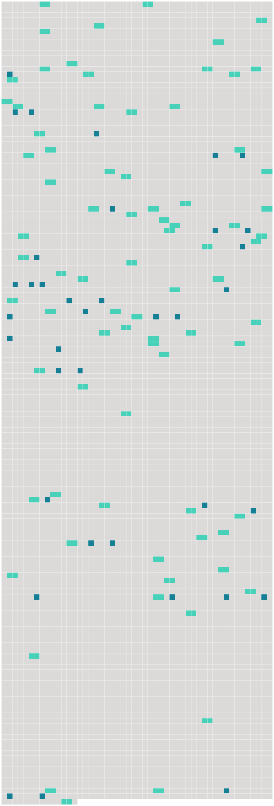

Longueur nb maillons : 117 mentions |
 |
Dans le transport des envois postaux, [le transporteur] n'est responsable qu'envers l'administration postale compétente conformément aux règles applicables dans les rapports entre [les transporteurs] et les administrations postales. [6 phrases]
Si un tel autre moyen est utilisé, [le transporteur] offrira de délivrer au passager un document écrit constatant les indications qui y sont consignées. [1 phrases]
[Le transporteur] délivrera au passager une fiche d'identification pour chaque article de bagage enregistré. [1 phrases]
Il sera donné au passager un avis écrit indiquant que, lorsque la présente convention s'applique, elle régit la responsabilité [des transporteurs] en cas de mort ou de lésion ainsi qu'en cas de destruction, de perte ou d'avarie des bagages, ou de retard. [6 phrases]
Si de tels autres moyens sont utilisés, [le transporteur] délivre à l'expéditeur, à la demande de ce dernier, un récépissé de marchandises permettant l'identification de l'expédition et l'accès aux indications enregistrées par ces autres moyens. [2 phrases]
Cette disposition ne crée pour [le transporteur] aucun devoir, obligation ni responsabilité. [3 phrases] Le premier exemplaire porte la mention " pour [le transporteur] " ; il est signé par l'expéditeur. Le deuxième exemplaire porte la mention " pour le destinataire " ; il est signé par l'expéditeur et [le transporteur]
Le troisième exemplaire est signé par [le transporteur] et remis par [lui] à l'expéditeur après acceptation de la marchandise. [1 phrases]
La signature [du transporteur] et celle de l'expéditeur peuvent être imprimées ou remplacées par un timbre. [1 phrases]
Si, à la demande de l'expéditeur, [le transporteur] établit la lettre de transport aérien, [ce dernier] est considéré, jusqu'à preuve du contraire, comme agissant au nom de l'expéditeur. [3 phrases] L'expéditeur est responsable de l'exactitude des indications et déclarations concernant la marchandise inscrites par lui ou en son nom dans la lettre de transport aérien, ainsi que de celles fournies et faites par lui ou en son nom [au transporteur] en vue d'être insérées dans le récépissé de marchandises ou pour insertion dans les données enregistrées par les autres moyens prévus au paragraphe 2 de l'article 4.
Ces dispositions s'appliquent aussi au cas où la personne agissant au nom de l'expéditeur est également l'agent [du transporteur] [1 phrases]
L'expéditeur assume la responsabilité de tout dommage subi par [le transporteur] ou par toute autre personne à l'égard de laquelle la responsabilité [du transporteur] est engagée, en raison d'indications et de déclarations irrégulières, inexactes ou incomplètes fournies et faites par [lui] ou en [son] nom. [1 phrases]
Sous réserve des dispositions des paragraphes 1 et 2 du présent article, [le transporteur] assume la responsabilité de tout dommage subi par l'expéditeur ou par toute autre personne à l'égard de laquelle la responsabilité de l'expéditeur est engagée, en raison d'indications et de déclarations irrégulières, inexactes ou incomplètes insérées par lui ou en son nom dans le récépissé de marchandises ou dans les données enregistrées par les autres moyens prévus au paragraphe 2 de l'article 4. [3 phrases]
Les énonciations de la lettre de transport aérien et du récépissé de marchandises, relatives au poids, aux dimensions et à l'emballage de la marchandise ainsi qu'au nombre des colis, font foi jusqu'à preuve du contraire ; celles relatives à la quantité, au volume et à l'état de la marchandise ne font preuve contre [le transporteur] que si la vérification en a été faite par [lui] en présence de l'expéditeur, et constatée sur la lettre de transport aérien, ou s'il s'agit d'énonciations relatives à l'état apparent de la marchandise. [1 phrases]
L'expéditeur a le droit, à la condition d'exécuter toutes les obligations résultant du contrat de transport, de disposer de la marchandise, soit en la retirant à l'aéroport de départ ou de destination, soit en l'arrêtant en cours de route lors d'un atterrissage, soit en la faisant livrer au lieu de destination ou en cours de route à une personne autre que le destinataire initialement désigné, soit en demandant son retour à l'aéroport de départ, pour autant que l'exercice de ce droit ne porte préjudice ni [au transporteur] , ni aux autres expéditeurs et avec l'obligation de rembourser les frais qui en résultent. [1 phrases]
Dans le cas où l'exécution des instructions de l'expéditeur est impossible, [le transporteur] doit l'en aviser immédiatement. [1 phrases]
Si [le transporteur] exécute les instructions de disposition de l'expéditeur, sans exiger la production de l'exemplaire de la lettre de transport aérien ou du récépissé de la marchandise délivré à celui -ci, [il] sera responsable, sauf [son] recours contre l'expéditeur, du préjudice qui pourra être causé par ce fait à celui qui est régulièrement en possession de la lettre de transport aérien ou du récépissé de la marchandise. [4 phrases]
Sauf lorsque l'expéditeur a exercé le droit qu'il tient de l'article 12, le destinataire a le droit, dès l'arrivée de la marchandise au point de destination, de demander [au transporteur] de lui livrer la marchandise contre le paiement du montant des créances et contre l'exécution des conditions de transport. [1 phrases]
Sauf stipulation contraire, [le transporteur] doit aviser le destinataire dès l'arrivée de la marchandise. [1 phrases]
Si la perte de la marchandise est reconnue par [le transporteur] ou si, à l'expiration d'un délai de sept jours après qu'elle aurait dû arriver, la marchandise n'est pas arrivée, le destinataire est autorisé à faire valoir vis-à-vis [du transporteur] les droits résultant du contrat de transport. [7 phrases]
L'expéditeur est responsable envers [le transporteur] de tous dommages qui pourraient résulter de l'absence, de l'insuffisance ou de l'irrégularité de ces renseignements et pièces, sauf le cas de faute de la part [du transporteur] ou de [ses] préposés ou mandataires. [1 phrases]
[Le transporteur] n'est pas tenu d'examiner si ces renseignements et documents sont exacts ou suffisants.
CHAPITRE III
[Le transporteur] est responsable du préjudice survenu en cas de mort ou de lésion corporelle subie par un passager, par cela seul que l'accident qui a causé la mort ou la lésion s'est produit à bord de l'aéronef ou au cours de toutes opérations d'embarquement ou de débarquement. [1 phrases] [Le transporteur] est responsable du dommage survenu en cas de destruction, perte ou avarie de bagages enregistrés, par cela seul que le fait qui a causé la destruction, la perte ou l'avarie s'est produit à bord de l'aéronef ou au cours de toute période durant laquelle [le transporteur] avait la garde des bagages enregistrés. Toutefois, [le transporteur] n'est pas responsable si et dans la mesure où le dommage résulte de la nature ou du vice propre des bagages.
Dans le cas des bagages non enregistrés, notamment des effets personnels, [le transporteur] est responsable si le dommage résulte de [sa] faute ou de celle de [ses] préposés ou mandataires. [1 phrases]
Si [le transporteur] admet la perte des bagages enregistrés ou si les bagages enregistrés ne sont pas arrivés à destination dans les vingt et un jours qui suivent la date à laquelle ils auraient dû arriver, le passager est autorisé à faire valoir contre [le transporteur] les droits qui découlent du contrat de transport. [3 phrases]
[Le transporteur] est responsable du dommage survenu en cas de destruction, perte ou avarie de la marchandise par cela seul que le fait qui a causé le dommage s'est produit pendant le transport aérien. [1 phrases]
Toutefois, [le transporteur] n'est pas responsable s' [il] établit, et dans la mesure où il établit, que la destruction, la perte ou l'avarie de la marchandise résulte de l'un ou de plusieurs des faits suivants : [1 phrases]
Le transport aérien, au sens du paragraphe 1 du présent article, comprend la période pendant laquelle la marchandise se trouve sous la garde [du transporteur] [3 phrases]
Si, sans le consentement de l'expéditeur, [le transporteur] remplace en totalité ou en partie le transport convenu dans l'entente conclue entre les parties comme étant le transport par voie aérienne, par un autre mode de transport, ce transport par un autre mode sera considéré comme faisant partie de la période du transport aérien.
Article 19
Cependant, [le transporteur] n'est pas responsable du dommage causé par un retard s' [il] prouve que [lui] , [ses] préposés et mandataires ont pris toutes les mesures qui pouvaient raisonnablement s'imposer pour éviter le dommage, ou qu'il leur était impossible de les prendre.
Article 20 Lorsqu'une demande en réparation est introduite par une personne autre que le passager, en raison de la mort ou d'une lésion subie par ce dernier, [le transporteur] est également exonéré en tout ou en partie de [sa] responsabilité dans la mesure où [il] prouve que la négligence ou un autre acte ou omission préjudiciable de ce passager a causé le dommage ou y a contribué. [2 phrases]
Pour les dommages visés au paragraphe 1 de l'article 17 et ne dépassant pas 100000 droits de tirage spéciaux par passager, [le transporteur] ne peut exclure ou limiter [sa] responsabilité. [1 phrases]
[Le transporteur] n'est pas responsable des dommages visés au paragraphe 1 de l'article 17 dans la mesure où ils dépassent 100000 droits de tirage spéciaux par passager, s' [il] prouve : [1 phrases]
En cas de dommage subi par des passagers résultant d'un retard, aux termes de l'article 19, la responsabilité [du transporteur] est limitée à la somme de 4150 droits de tirage spéciaux par passager. [1 phrases] Dans le transport de bagages, la responsabilité [du transporteur] en cas de destruction, perte, avarie ou retard est limitée à la somme de 1000 droits de tirage spéciaux par passager, sauf déclaration spéciale d'intérêt à la livraison faite par le passager au moment de la remise des bagages enregistrés [au transporteur] et moyennant le paiement éventuel d'une somme supplémentaire.
Dans ce cas, [le transporteur] sera tenu de payer jusqu'à concurrence de la somme déclarée, à moins qu' [il] prouve qu'elle est supérieure à l'intérêt réel du passager à la livraison. [1 phrases] Dans le transport de marchandises, la responsabilité [du transporteur] , en cas de destruction, de perte, d'avarie ou de retard, est limitée à la somme de 17 droits de tirage spéciaux par kilogramme, sauf déclaration spéciale d'intérêt à la livraison faite par l'expéditeur au moment de la remise du colis [au transporteur] et moyennant le paiement d'une somme supplémentaire éventuelle.
Dans ce cas, [le transporteur] sera tenu de payer jusqu'à concurrence de la somme déclarée, à moins qu' [il] prouve qu'elle est supérieure à l'intérêt réel de l'expéditeur à la livraison. [1 phrases] En cas de destruction, de perte, d'avarie ou de retard d'une partie des marchandises, ou de tout objet qui y est contenu, seul le poids total du ou des colis dont il s'agit est pris en considération pour déterminer la limite de responsabilité [du transporteur] [2 phrases]
Les dispositions des paragraphes 1 et 2 du présent article ne s'appliquent pas s'il est prouvé que le dommage résulte d'un acte ou d'une omission [du transporteur] , de [ses] préposés ou de [ses] mandataires, fait soit avec l'intention de provoquer un dommage, soit témérairement et avec conscience qu'un dommage en résultera probablement, pour autant que, dans le cas d'un acte ou d'une omission de préposés ou de mandataires, la preuve soit également apportée que ceux -ci ont agi dans l'exercice de leurs fonctions. [2 phrases]
La disposition précédente ne s'applique pas lorsque le montant de l'indemnité allouée, non compris les dépens et autres frais de procès, ne dépasse pas la somme que [le transporteur] a offerte par écrit au demandeur dans un délai de six mois à dater du fait qui a causé le dommage ou avant l'introduction de l'instance si celle -ci est postérieure à ce délai. [6 phrases] Toutefois, les États qui ne sont pas membres du Fonds monétaire international et dont la législation ne permet pas d'appliquer les dispositions du paragraphe 1 du présent article, peuvent, au moment de la ratification ou de l'adhésion, ou à tout moment par la suite, déclarer que la limite de responsabilité [du transporteur] prescrite à l'article 21 est fixée, dans les procédures judiciaires sur leur territoire, à la somme de 1500000 unités monétaires par passager ; 62500 unités monétaires par passager pour ce qui concerne le paragraphe 1 de l'article 22 ; 15000 unités monétaires par passager pour ce qui concerne le paragraphe 2 de l'article 22 ; et 250 unités monétaires par kilogramme pour ce qui concerne le paragraphe 3 de l'article 22. [17 phrases]
Article 25
Article 26
Article 27
Article 28
Ces avances ne constituent pas une reconnaissance de responsabilité et elles peuvent être déduites des montants versés ultérieurement par [le transporteur] à titre de dédommagement. [3 phrases]
Si une action est intentée contre un préposé ou un mandataire [du transporteur] à la suite d'un dommage visé par la présente convention, ce préposé ou mandataire, s'il prouve qu'il a agi dans l'exercice de ses fonctions, pourra se prévaloir des conditions et des limites de responsabilité que peut invoquer [le transporteur] en vertu de la présente convention. [1 phrases]
Le montant total de la réparation qui, dans ce cas, peut être obtenu [du transporteur] , de [ses] préposés et de [ses] mandataires, ne doit pas dépasser lesdites limites. [5 phrases] En cas d'avarie, le destinataire doit adresser [au transporteur] une protestation immédiatement après la découverte de l'avarie et, au plus tard, dans un délai de sept jours pour les bagages enregistrés et de quatorze jours pour les marchandises à dater de leur réception. [4 phrases]
À défaut de protestation dans les délais prévus, toutes actions contre [le transporteur] sont irrecevables, sauf le cas de fraude de [celui -ci] [2 phrases]
L'action en responsabilité devra être portée, au choix du demandeur, dans le territoire d'un des États parties, soit devant le tribunal du domicile [du transporteur] , du siège principal de son exploitation ou du lieu où il possède un établissement par le soin duquel le contrat a été conclu, soit devant le tribunal du lieu de destination. [1 phrases]
En ce qui concerne le dommage résultant de la mort ou d'une lésion corporelle subie par un passager, l'action en responsabilité peut être intentée devant l'un des tribunaux mentionnés au paragraphe 1 du présent article ou, eu égard aux spécificités du transport aérien, sur le territoire d'un État partie où le passager a sa résidence principale et permanente au moment de l'accident et vers lequel ou à partir duquel [le transporteur] exploite des services de transport aérien, soit avec [ses] propres aéronefs, soit avec les aéronefs d'un autre transporteur en vertu d'un accord commercial, et dans lequel [ce transporteur] mène [ses] activités de transport aérien à partir de locaux que [lui-même] ou un autre transporteur avec lequel [il] a conclu un accord commercial loue ou possède. [6 phrases] Sous réserve des dispositions du présent article, les parties au contrat de transport de fret peuvent stipuler que tout différend relatif à la responsabilité [du transporteur] en vertu de la présente convention sera réglé par arbitrage. [16 phrases] S'il s'agit de bagages ou de marchandises, le passager ou l'expéditeur aura recours contre le premier transporteur, et le destinataire ou le passager qui a le droit à la délivrance contre le dernier, et l'un et l'autre pourront, en outre, agir contre [le transporteur] ayant effectué le transport au cours duquel la destruction, la perte, l'avarie ou le retard se sont produits. [15 phrases]
Article 42 [9 phrases]
Article 50
[Un transporteur] peut être tenu, par l'État partie à destination duquel [il] exploite des services, de fournir la preuve qu' [il] maintient une assurance suffisante couvrant [sa] responsabilité au titre de la présente convention.
Article 51 |
 |
La ressource peut être téléchargée sur la page Ortolang
Si vous avez des questions ou vous voyez des erreurs, merci d'envoyer un mail à silvia.federzoni89@gmail.com
Site développé par S. Federzoni (contact)